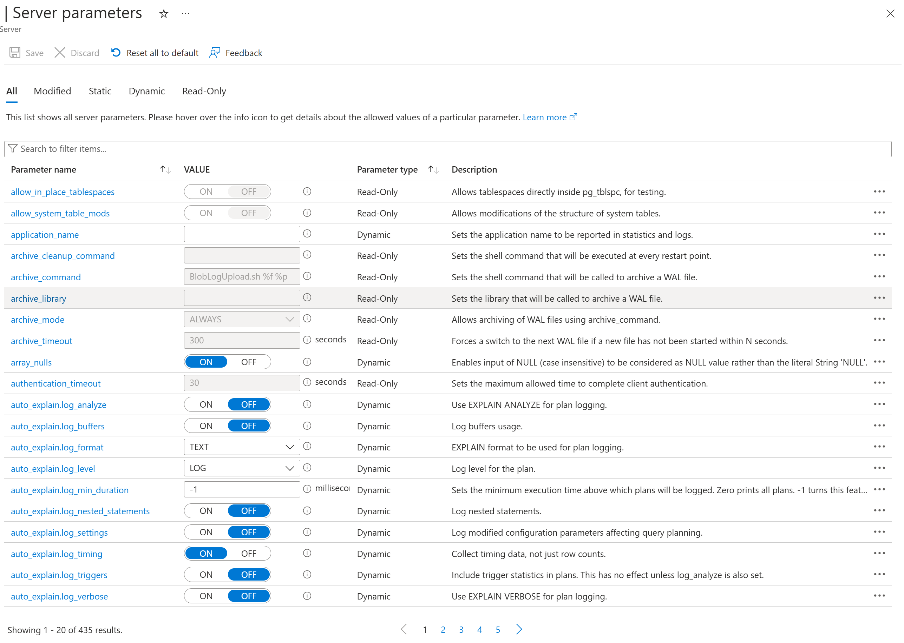

Tutorial pg admin
AIGraph4pg Tutorial : Azure PostgreSQL Administration
PostgreSQL Documentation
There is a vast amount of documentation available for PostgreSQL, including:
- Official documentation in HTML format.
- Official documentation in PDF format. The PDF file alone is over 3100 pages long
- Azure Database for PostgreSQL - Flexible Server documentation
This tutorial can't possibly cover the entire breadth and depth of PostgreSQL, and therefore just focuses on the following topics related to this reference application - PostgreSQL Settings, PostgreSQL Catalog, and Apache AGE.
PostgreSQL Settings
PostgreSQL is highly configurable via a large set of Server Parameters and some of these may be optimized for performance tuning.These can be viewed and administered in Azure Portal as shown below:

Likewise, these parameters may be queried in a client program such as psql with the following SQL:
This SQL is one of the items in the drop-down list of queries for the PG Admin Queries page of this reference application, thus you can execute it in the web UI.All of the SQL queries in this reference application UI are defined in file python/config/sample_queries.txt in this repo. You can edit and customize this file as necessary for your needs.Azure Database for PostgreSQL offers automated intelligent tuning of these parameters for your workload. This feature is described here: Configure intelligent tuning for Azure Database for PostgreSQL.PostgreSQL Catalog
As with the server parameters, the catalog of schemas, tables, indexes, and other objects is queryable with SQL. A few example queries are shown below:Display the columns in a given relational table (i.e. - legal_cases):
select ordinal_position, table_catalog, table_name, column_name, data_type, character_maximum_length
from information_schema.columns
where table_name = 'legal_cases'
order by ordinal_position;
PostgreSQL Extensions
List of Available Extensions:
select name, default_version, installed_version, comment
from pg_available_extensions
where installed_version is null
order by name;
Apache AGE
List the Apache AGE Graphs:
List the Apache AGE Graph Labels - the Vertex and Edge types: